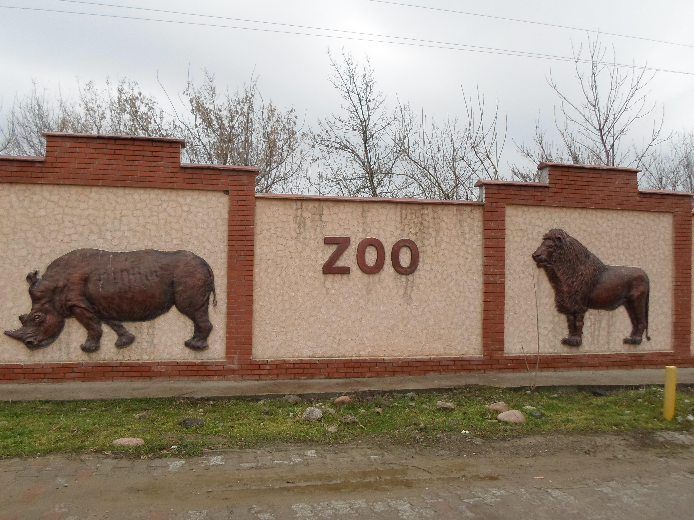
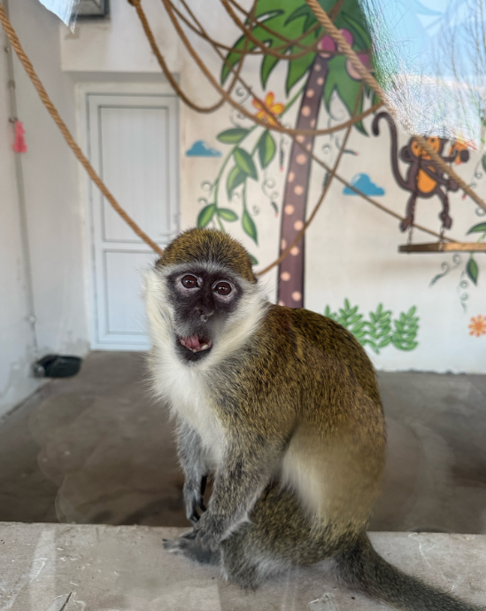

Зоопарк Шымкента – один из крупнейших в Казахстане
Зоопарк Шымкента занимает территорию в 34 гектара и является домом для более чем 150 видов животных. Это одно из лучших мест в Южном Казахстане для семейного отдыха и знакомства с животным миром.
- Площадь: 34 гектара
- Количество видов: более 150
- Особенности: сафари-зона, экзотические животные
- Открытие: 1980 год
Что посмотреть?
- 🦁 Львы, тигры, медведи
- 🦓 Антилопы и жирафы
- 🐍 Террариум с рептилиями
- 🦜 Птицы и обезьяны
Как добраться?
📍 г. Шымкент, пр. Толе би, 173
🚌 Общественный транспорт, такси, авто
Часы работы и цены
⏰ Ежедневно с 09:00 до 19:00
💰 Вход: взрослые – 800 KZT, дети – 400 KZT
Зоопарк Шымкента — это уникальная возможность увидеть животных со всего света и провести время с семьёй на природе! 🐾
ФОТО

